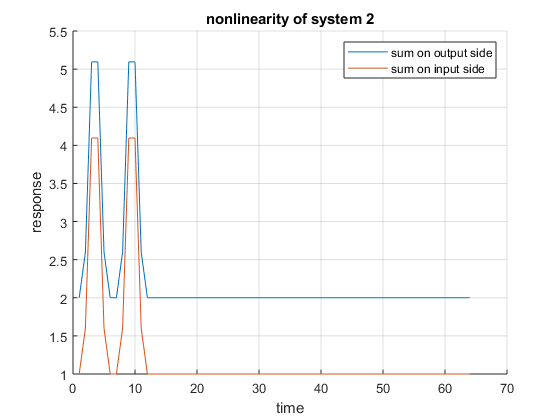
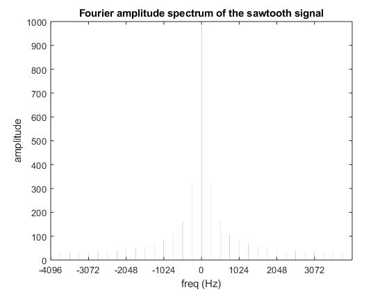
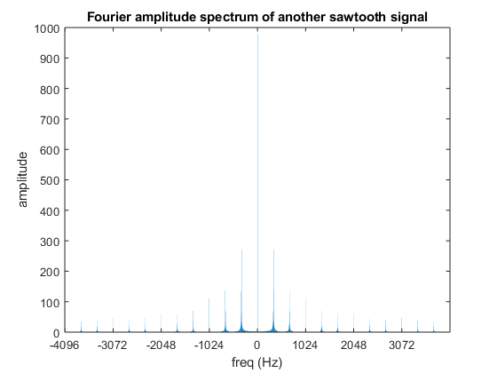
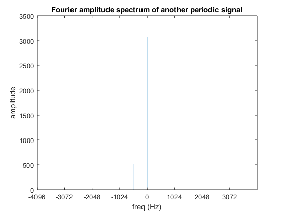
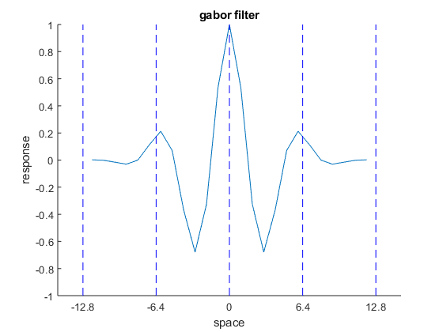
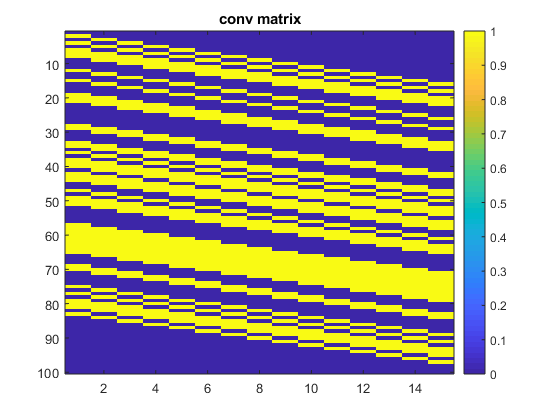
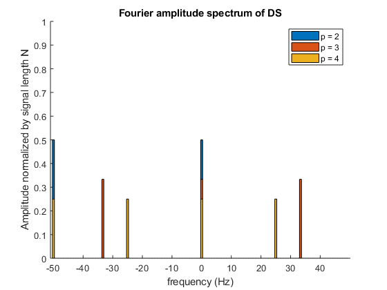
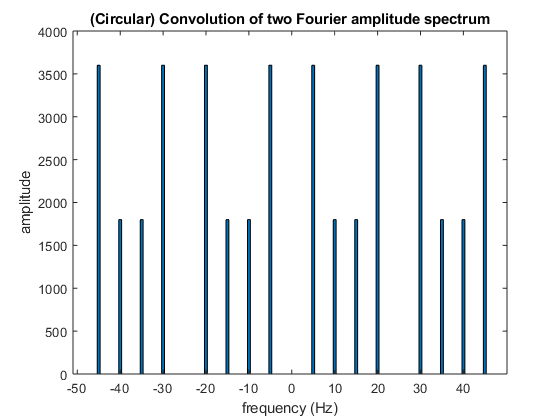

Contents
close all; clear
1 LSI system characterization
- a) check linearity and shift-invariance
N=64;
I = eye(64); % generate a series of impulse input
System 1 is not shift-invariant. The reponse gain changes with time.
figure; hold on; grid on positions = [1 2 4 8 62]; for p=positions+1 output = unknownSystem1(I(:,p)); line = plot(output); set(line,'Displayname',['impulse response at ',num2str(p-1)]); end xlabel('time') ylabel('response') title('Impulse response of system 1 at different positions') legend('Location','north')
System 1 is nonlinear.
output1 = unknownSystem1(I(:,positions(1))); output2 = unknownSystem1(I(:,positions(2))); sumOfOutput = output1+output2; sumOfInput = I(:,positions(1))+I(:,positions(2)); if all(sumOfOutput == unknownSystem1(sumOfInput)) disp('System 1 is possibly linear') else disp('System 1 is nonlinear') end
System 1 is nonlinear
System 2 is shift-invariant
figure; hold on; grid on %positions = randperm(N,4); positions = [1 2 4 8]; for p=positions+1 output = unknownSystem2(I(:,p)); line = plot(output); set(line,'Displayname',['impulse response at ',num2str(p-1)]); end xlabel('time') ylabel('response') title('Impulse response of system 2 at different positions') legend('Location','north')
circular boundary handling also holds for very late impulse.
figure figure; hold on; grid on for p=positions+54 output = unknownSystem2(I(:,p)); line = plot(output); set(line,'Displayname',['impulse response at ',num2str(p-1)]); end xlabel('time') ylabel('response') title('Impulse response of system 2 at different positions') legend('Location','north')
System 2 is nonlinear because of a nonzero offset
output1 = unknownSystem2(I(:,positions(4))); output2 = unknownSystem2(I(:,positions(2))); sumOfOutput = output1+output2; sumOfInput = I(:,positions(4))+I(:,positions(2)); if all(sumOfOutput == unknownSystem2(sumOfInput)) disp('System 2 is possibly linear') else disp('System 2 is nonlinear') end
System 2 is nonlinear
figure; hold on; grid on plot(sumOfOutput) plot(unknownSystem2(sumOfInput)) xlabel('time');ylabel('response') legend('sum on output side','sum on input side','Location','northeast') title('nonlinearity of system 2')
System 3 is shift-invariant, circular boundary handling also holds for very late impulse.
figure; hold on; grid on % positions = randperm(N,4) positions = [1 2 4 8]; for p=positions+1 output = unknownSystem3(I(:,p)); line = plot(output); set(line,'Displayname',['impulse response at ',num2str(p-1)]); end xlabel('time') ylabel('response') title('Impulse response of system 3 at different positions') legend('Location','north')
circular boundary handling also holds for very late impulse.
figure figure; hold on; grid on for p=positions+54 output = unknownSystem3(I(:,p)); line = plot(output); set(line,'Displayname',['impulse response at ',num2str(p+1)]); end xlabel('time') ylabel('response') title('Impulse response of system 3 at different positions') legend('Location','north')
System 3 is possibly linear
positions = randi(N,1,4); g1=1;g2=1; output1 = unknownSystem3(I(:,positions(1))); output2 = unknownSystem3(I(:,positions(2))); sumOfOutput = g1*output1+g2*output2; sumOfInput = g1*I(:,positions(1))+g2*I(:,positions(2)); if all(sumOfOutput == unknownSystem3(sumOfInput)) disp('System 3 is possibly linear') else disp('System 3 is nonlinear') end
System 3 is possibly linear
- b) response to sinusoid
function [amp,phaseDiff]=isSameFreqSinusoid(f,system) % The following equation test whether the output is of the same % frequency with the input. The test uses linear regression, which is % equivalent with calculating the Fourier coefficients of the output % corresponding to the input frequency term and the DC term, and check % if the regression is complete. N=64;t = (0:(N-1))'; %% generate input with desired frequency and random phase inputPhase = randi(N,1)*2*pi/N; input = cos(f*t + inputPhase)+1; %% compute output output = system(input); %% generate orthonormal basis of the subspace X = [ones(N,1),cos(f*t),-sin(f*t)]; % -sin because of conjugate in complex inner products %% linear regression % The SVD method gives a slightly different pseudoinverse matrix and % the error is at the same order as using the backslash method in % MATLAB. I use backslash instead for concisement b = (X'*X)\X'*output; % standard linear regression operation (projection of r to X's subspace, analogous to vector projection) % [U,S,V] = svd(X); % Si = zeros(size(S')); % for ii = 1:min(size(X)) % Si(ii,ii) = 1./S(ii,ii); % end % b = V*Si*U'*output; % X*b-output %% examine if regression is complete result = all(abs(X*b-output)<1e-10); % to avoid floating number error, equivalent to using round and == if result disp('output is in the same subspace'); else disp('output is outside the input subspace'); end %% calculate amplitude and phase shift amp = sqrt(b(2)^2+b(3)^2); phase = atan2(b(3),b(2)); phaseDiff = phase - inputPhase; phaseDiff = mod(phaseDiff+pi,2*pi)-pi; % so that -pi<=phaseDiff<pi
for sys = 1:2 eval(sprintf('system = @unknownSystem%d',sys)); disp system for f = [1,2,4,8] disp(['frequency: ',num2str(f),'*2*pi/64']) isSameFreqSinusoid(f*2*pi/N,system); end end
system =
function_handle with value:
@unknownSystem1
system
frequency: 1*2*pi/64
output is outside the input subspace
frequency: 2*2*pi/64
output is outside the input subspace
frequency: 4*2*pi/64
output is outside the input subspace
frequency: 8*2*pi/64
output is outside the input subspace
system =
function_handle with value:
@unknownSystem2
system
frequency: 1*2*pi/64
output is outside the input subspace
frequency: 2*2*pi/64
output is outside the input subspace
frequency: 4*2*pi/64
output is outside the input subspace
frequency: 8*2*pi/64
output is outside the input subspace
Only System 3 project sinusoids into sinuisoid of the same frequency.
system = @unknownSystem3 freqs = [1,2,4,8]; for f = freqs disp(['frequency: ',num2str(f),'*2*pi/64']) [amplitude(f),phaseShift(f)]=isSameFreqSinusoid(f*2*pi/N,@unknownSystem3); end
system =
function_handle with value:
@unknownSystem3
frequency: 1*2*pi/64
output is in the same subspace
frequency: 2*2*pi/64
output is in the same subspace
frequency: 4*2*pi/64
output is in the same subspace
frequency: 8*2*pi/64
output is in the same subspace
The amplitude and phase of the output is predicted by the Fourier transfrom of system's impulse response
impulseResponse = unknownSystem3(I(:,1)); impulseResponseDFT = fft(impulseResponse); ampF = abs(impulseResponseDFT); phaseF = angle(impulseResponseDFT); figure ax1=subplot(2,1,1); hold on; grid on bar((-N/2):(N/2-1),fftshift(ampF)) bar(freqs,amplitude(freqs)) legend('impulse response', 'output/input') ylabel('amplitude') ax2=subplot(2,1,2); hold on; grid on bar((-N/2):(N/2-1),fftshift(phaseF)) bar(freqs,phaseShift(freqs)) legend('impulse response', 'output-input') ylabel('phase (rad)') linkaxes([ax1 ax2],'x') xlabel(sprintf('freq (cycle/%dsample)',N))
if all(abs(amplitude(freqs) - ampF(freqs+1)')<1e-7) disp('Amplitudes matches!') else disp('Amplitudes not match') end
Amplitudes matches!
if all(abs(phaseShift(freqs) - phaseF(freqs+1)')<1e-7) disp('Phases matches!') else disp('Phases not match') end
Phases matches!
- c)
System 1 is neither linear nor shift-invariant, and it doesn't project siusoids into the sinusoid subspaces with same frequency.
System 2 is nonlinear but shift-invariant, and it doesn't project siusoids into the sinusoid subspaces with same frequency.
System 3 seems both linear and shift-invariant, and it projects siusoids into the sinusoid subspaces with same frequency.
Linearity and shift-invariance and *indepedent properties* so that they can be tested *seperately*, but only if a system is both linear and shift-invariant, its response to sinuisoid would be a sinusoid of the same frequency and the output gain and phase shift relative to input can be predicted by the Fourier transform of the system's impulse reponse.
So if a system always output a sinusoid given any sinusoid input, with a fixed gain and phase shift that do not vary with input strength and phase, then this system is *guarenteed* to be a LSI system.
2 Fourier transform of periodic signals
- a)
N=2048; n = 1:N; sig = mod(n,32)/32; % generate a sawtooth figure;plot((1:N)/8192,sig);xlabel('time (s)'); xlim([0 N/8192]);title('a sawtooth signal')
sound(sig,8192)
Duration is 2048/8192Hz = 0.25 seconds.
Period is 32/8192Hz = 2^-8 = 0.039 seconds. freqency is 2^8=256 Hz, closest to middle C (C4, 261.6Hz)
- b)
sigF = fft(sig); figure bar((-N/2):(N/2-1),fftshift(abs(sigF))) ylabel('amplitude') ticks=-(N/2):256:(N/2-1); xticks(ticks) xticklabels(ticks/N*8192) xlabel(sprintf('freq (Hz)')) title('Fourier amplitude spectrum of the sawtooth signal')
There are huge gaps between bars, only multiples of 256 Hz have nonzero amplitudes.
Generally, the regular spaced peak pattern in frequency domain indicates a perodity in time domain.
period can be determined by the inverse of spacing between the peaks. For the spectrum above, spacing is 256Hz and period is (1/256) seconds.
For a sawtooth with a different period,
sig24 = mod(n,24)/24; % generate a new sawtooth of 24-sample period % the frequency of this signal is 8192/24 = 1024/3 Hz sig24F = fft(sig24);
The spectrum also peaks regularly:
figure bar((-N/2):(N/2-1),fftshift(abs(sig24F))) ylabel('amplitude') ticks=-1024:(2048/24*3):1023; xticks(ticks) xticklabels(ticks/N*8192) xlabel(sprintf('freq (Hz)')) title('Fourier amplitude spectrum of another sawtooth signal')

The spectrum peaks every time the frequency is a multiple of 1024/3 Hz. It has a period of 3/1024 seconds.
- c)
now for another periodic signal
N=2048; sigG = (1+cos(n*2*pi*64/N)).^2; sigGF = fft(sigG); figure bar((-N/2):(N/2-1),fftshift(abs(sigGF))) ylabel('amplitude') ticks=-1024:256:1023; xticks(ticks) xticklabels(ticks/N*8192) xlabel(sprintf('freq (Hz)')) title('Fourier amplitude spectrum of another periodic signal')
This spectrum is only nonzero at frequency 0, 256 and 512 Hz.
So it still has a period of 2^-8 second, or 32 samples.
figure; hold on nT = 1:32; plot(nT/8192,sig(nT)); plot(nT/8192,sigG(nT)); legend('f(n)','g(n') xlabel('time (s)') title('one period of two signals')
the wave looks more smooth, as in the Fourier spectrum there is no high frequency components, but is only a linear combination of 256 Hz and 512 Hz sinusoids and a DC shift.
And the timbre of g(n) sounds brighter.
3 Gabor filter
- a)
n = -12:12; sigma=3.5; omega=10*2*pi/64; gabor=exp(-(n/sigma).^2/2).*cos(omega*n); figure plot(n,gabor);title('gabor filter') xlabel('space') ylabel('response')
gaborF=fft(gabor,64); figure plot(-32:31,fftshift(abs(gaborF))) title('Fourier amplitude spectrum of gabor') xlabel('spatial frequency k (cycle/64 sample)') ylabel('amplitude') grid on
This is a bandpass filter that selectively filter frequency of 10*2pi/64 samples. It looks like two gaussian functions centered at 10 and -10. This shape results from the convolution of Gaussian function's spectrum (which is another Gaussian) and sinusoid function (impulse at k=+/-10 ).
omega determines the bandpass frequency and 1/sigma determines the width of the band. If I let omega=12*2pi/64 and sigma=1
gaborWiderAt12 = exp(-(n).^2/2).*cos(omega*1.2*n); gaborWiderAt12F=fft(gaborWiderAt12,64); figure plot(-32:31,fftshift(abs(gaborWiderAt12F))) title('Fourier amplitude spectrum of another gabor') xlabel('spatial frequency k (cycle/64 sample)') ylabel('amplitude') grid on
I get two wider Gaussian centered at k=+/- 12
- b )
Among all sinusoid , f = 10 will give the largest response.
because the convolution at position 0
is the real part of the f'th Fourier coefficient. and since gabor is evenly symmetric, thus the imagionary parts are all zero, the real part is just the amplitude.
Gabor is the product of a Gaussian function and a sinusoid in space domain so the spectrum in the frequency domain is the convolution of Gaussian's spectrum and two impulse at corresponding sinusoid frequency (positive and negative). Since Gaussian's spectrum peaks at 0, Gabor's spectrum should peak at corresponding sinusoid frequency as well.
the max amplitude is at the position f = 10
[Fmax,ind] = max(abs(gaborF)); disp(ind-1)
10
figure; hold on plot(-32:31,fftshift(abs(gaborF))) plot(ind-1,Fmax,'r*') plot(1-ind,Fmax,'r*') title('peak position of Gabor''s spectrum') xlabel('spatial frequency k (cycle/64 sample)') ylabel('amplitude') grid on
The period of this sinusoid is 2pi/(f*2pi/64)=64/f samples
64/10 figure; hold on plot(n,gabor);title('gabor filter') plot([6.4,6.4],[-1 1],'b--') plot([6.4,6.4]*2,[-1 1],'b--') plot([0,0],[-1 1],'b--') plot([6.4,6.4]*-1,[-1 1],'b--') plot([6.4,6.4]*-2,[-1 1],'b--') xticks(-12.8:6.4:12.8) xlabel('space') ylabel('response')
ans =
6.4000

By eye inspection, this is roughly the distance between peaks in the filter itself.
gaborF=fft(gabor,64); figure; hold on; grid on plot(-32:31,fftshift(abs(gaborF))) plot([-32,31],[Fmax Fmax],'b--') plot([-32,31],[Fmax Fmax]*0.25,'b--') plot([5 5],[0 Fmax],'b--') plot([15 15],[0 Fmax],'b--') xticks(-35:10:35) title('Fourier amplitude spectrum of gabor') xlabel('spatial frequency (cycle/64 sample)')
By eye inspection, sinusoids of frequency 5/64 cycle/sample and 15/64 cycle/sample will give about 25% of the maximal amplitude
- c)
Indeed, these two sinusoids gives roughly 1/4 maximal response:
n=1:64; input5 = cos( 5*2*pi/64*n); input10 = cos(10*2*pi/64*n); input15 = cos(15*2*pi/64*n); rLow = conv(input5 ,gabor); rMed = conv(input10,gabor); rHih = conv(input15,gabor); ampLow = abs(fft(rLow,64)); display(['low freq response amplitude: ',num2str(ampLow(5+1))]) ampMed = abs(fft(rMed,64)); display(['medium freq response amplitude: ',num2str(ampMed(10+1))]) ampHih = abs(fft(rHih,64)); display(['high freq response amplitude: ',num2str(ampHih(15+1))])
low freq response amplitude: 26.4826 medium freq response amplitude: 113.6463 high freq response amplitude: 25.7612
4 Deconvolution of the Haemodynamic Response
load hrfDeconv.mat; figure;hold on plot(r);stem(x); legend('r(t)','x(t)') xlabel('time (s)') title('measured activity and true activity')
To convolve x with h, we can trun x into X and do Xh:
function X=createConvMat(x,M) % size(x) should be [N,1] xPad = [x;zeros(M-1,1)]; for ii=1:M X(:,ii) = circshift(xPad,ii-1); end
M = 15; X = createConvMat(x,M);
Verify the matrix X
for ii = 1:5 disp(['test filter ',num2str(ii)]) h = rand(M,1); if all(X*h == conv(x,h)); disp('X*h is equal to conv(x,h)'); else; disp('Fail'); end end
test filter 1 X*h is equal to conv(x,h) test filter 2 X*h is equal to conv(x,h) test filter 3 X*h is equal to conv(x,h) test filter 4 X*h is equal to conv(x,h) test filter 5 X*h is equal to conv(x,h)
Verified.
figure;imagesc(X);colorbar;title('conv matrix')
X has a step-like structure. Every column is a shifted version of another.
- b)
h_opt = (X'*X)\X'*r; % standard linear regression operation (projection of r to X's subspace, analogous to vector projection) % [U,S,V] = svd(X); % Si = zeros(size(S')); % for ii = 1:min(size(X)) % Si(ii,ii) = 1./S(ii,ii); % end % h_opt = V*Si*U'*r; % The SVD method gives a slightly different pseudoinverse matrix and % the error is at the same order as using the backslash method in % MATLAB. I use backslash instead for concisement figure; plot(h_opt); xlabel('time (s)'); legend('h(t)') title('Estimated Haemodynamic Response') grid on
The HRF curve looks like a 3/4 cycle sine wave multiplied by a decay.
It rises to peak in 5 seconds and drops into negative then recover. The positive peak is about 3 times the negative valley. It takes about 15 second for HRF to recover to baseline.
r_est = conv(x,h_opt); figure; hold on plot(r);plot(r_est); legend('r(t)','r_{est}(t)') xlabel('time (s)') ylabel('response')
The estimated HRF fits the response well.
- c)
M=15; hF = fft(h,M); hP = hF.*conj(hF); figure freqs = (0:M-1) - floor(M/2); freqs = freqs/M; plot(freqs,fftshift(hP)) xlabel('freq (Hz)');ylabel('power') xticks(-.4:.2:.4) title('power spectrum of h(t)')

h(t) is a low pass filter, only frequencies lower than 0.05 Hz are passed.
5 Sampling and aliasing
load myMeasurements.mat
- a)
p=4; % subsample period figure; hold on plot(time/100,sig,'ko-') xlabel('time (s)') DS = mod(time,p)==0; sigDS = sig(DS); plot(time(DS)/100,sigDS,'r*-') legend('original signal','subsampled signal')

The reduced version signal looks like another perodic signal. It doesn't provide a good summary of the original signal.
subsampling operation is linear but not shift-invariant, because it's essentially pairwise multiplication with another signal where every fourth value is 1 and otherwise 0. This operation is additive but if we shift the signal with a timestep that is not a multiple of subsampling frequency, we get a completely different signal.
- b)
N = length(time); sigF = fft(sig); sigDSUS = sig.*DS; sigDSF = fft(sigDSUS); figure; hold on plot((-N/2):(N/2-1),fftshift(abs(sigF)),'k') plot((-N/2):(N/2-1),fftshift(abs(sigDSF)),'r') % plot((-N/2):(N/2-1),fftshift(abs(fft(DS)))) plot([-N/p/2,-N/p/2,N/p/2,N/p/2],[0 120 120 0],'b--') legend('original signal','subsampled then upsampled signal','1/2 subsampling frequency') ticks = (-N/2):(N/10):(N/2-1); xticks(ticks) xticklabels(ticks/N*100) xlabel('frequency (Hz)') ylabel('Fourier amplitude')

subsampling basically copys the origianl spectrum (without DC component) four times, scales them by 1/4 and places them centered at every multiple of 1/2 subsampling frequency.
close all